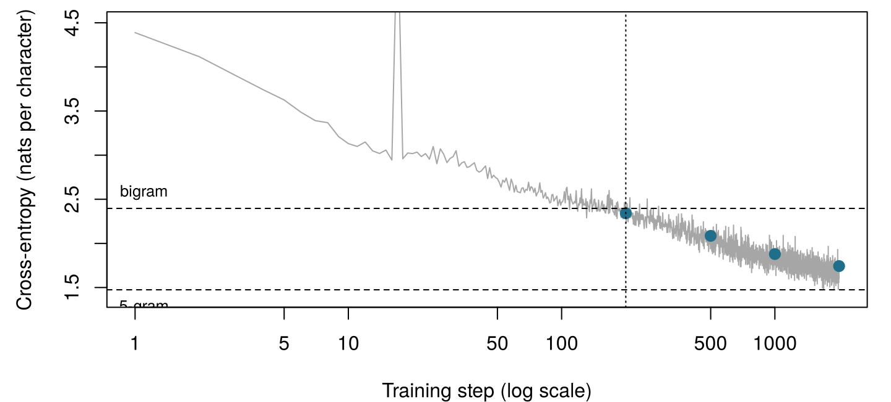
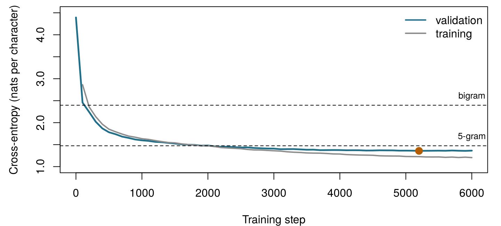

| Model | Weights | Blocks N | Dimension d | Context (tokens) | Vocabulary | Training text |
|---|---|---|---|---|---|---|
| Browser GPT (this chapter, NumPy) | 107 200 | 2 | 64 | 32 | 79 | 217 501 characters |
| Larger GPT (this chapter, PyTorch) | 811 648 | 4 | 128 | 64 | 79 | 217 501 characters |
| GPT-2 small (Radford et al. 2019) | 117 million | 12 | 768 | 1 024 | 50 257 | about 40 GB of web text |
| GPT-3 (Brown et al. 2020) | 175 billion | 96 | 12 288 | 2 048 | 50 257 | 300 billion tokens seen |
18 Train your first GPT
A GPT is trained to do one thing: predict what comes next. Our model will predict the next character. Before any code, play the game yourself: which character comes next?
| Text so far | Next character |
|---|---|
Notes on Nursin |
|
fresh ai |
|
the sick-roo |
|
Florence Nightingal |
How to use this chapter
Starting here?
This chapter puts together the ideas of the three chapters before it and of Chapter 7. In a few lines:
- Text is cut into tokens drawn from a vocabulary \(\mathcal{V}\); tokens can be words, pieces of words or single characters (Chapter 15).
- A language model gives a probability to every possible next token, \(P_\theta(w_t \mid w_{<t})\). By the chain rule the probability of a whole text is the product of these next-token probabilities. A model is judged by its cross-entropy on held-out text, the average of \(-\log P_\theta(\text{actual next token})\), or equivalently by its perplexity, the effective number of choices it hesitates between. Text is generated by sampling, with a temperature and top-\(k\) to shape the distribution (Chapter 16).
- A transformer turns each token into an embedding plus a positional encoding and passes the vectors through blocks of causal multi-head self-attention and a feed-forward network, each with layer normalisation and a residual connection. A GPT is a stack of such blocks with a causal mask, trained on next-token prediction (Chapter 17).
- A neural network’s weights are learned by gradient descent, using gradients computed by backpropagation, in batches, over several epochs; a validation set shows when the network starts to overfit, and early stopping keeps the best weights (Chapter 7, Chapter 3). A model is a simplified representation built for a purpose (Definition 1.3).
| Example | Who or what | Outcome | Faces you will meet |
|---|---|---|---|
| 1 Ward 7 ICU | 1 250 ICU patients in 4 hospitals | change in creatinine over 48 h (acute kidney injury if ≥ 0.3 mg/dL) | Aoife (71, sepsis, borderline risk), Tomás (54, low risk), Priya (38, high risk); Dr Emma Walsh; Seán, the pharmacist |
| 2 ONCO-1 trial | 1 000 patients randomised to chemotherapy or not | tumour shrinkage (%) | patients #0042 and #0917 |
| 3 HomeBeat | 500 people wearing a smartwatch at home | stress score, deterioration event | Lena |
| 4 CellWorks | 420 production batches of a cell therapy | potency score | batch CW-118 |
All four datasets are simulated and can be downloaded from the data appendix. The full introduction is in Section 1.1.
This chapter steps away from the four running examples for one evening: its data are a real, public-domain book written in 1859, which describes no patient of today.
This chapter trains a GPT from start to finish. It has ten sections and a Lab, six quick checks, three “Try it” widgets, a challenge and three coding missions in R and Python. Allow about two hours, plus a few minutes of your computer’s time. Two kinds of code run in your browser: a complete GPT written in NumPy that you train yourself (Section 18.5), and a larger model trained in advance that you use to write text (Section 18.7). A Jupyter notebook lets you train the larger one on your own laptop or in Google Colab (Section 18.8).
Notation at a glance (for lookup only)
| Symbol | Meaning | Section |
|---|---|---|
| \(\mathcal{V}\), \(V = \lvert\mathcal{V}\rvert\) | vocabulary (here: the distinct characters) and its size | Section 18.2 |
| \(w_t\) | token (character) at position \(t\) | Section 18.2 |
| \(T\), \(B\) | context length (characters per window); batch size (windows per step) | Section 18.2 |
| \(d\), \(N\), \(h\) | model dimension, number of blocks, number of heads | Section 18.4 |
| \(\mathbf{E}\), \(\mathbf{P}\) | token embedding matrix (\(V \times d\)); position embedding matrix (\(T \times d\)) | Section 18.4 |
| \(\theta\) | all the weights of the model | Section 18.5 |
| \(\mathcal{L}(\theta)\) | training loss: mean cross-entropy over all positions of a batch, in nats | Section 18.5 |
| \(\mathbf{z}_t\), \(\mathbf{p}_t\) | logits and next-character probabilities at position \(t\) | Section 18.5 |
| \(\nabla_\theta \mathcal{L}\), \(\eta\) | gradient of the loss; learning rate | Section 18.5 |
| \(\mathbf{m}\), \(\mathbf{v}\), \(\beta_1\), \(\beta_2\) | Adam’s running averages and their decay rates | Section 18.5 |
| \(\tau\), \(k\) | sampling temperature; number of tokens kept by top-\(k\) | Section 18.7 |
The full list is on the notation page.
18.1 The plan: the same recipe, scaled down
Every GPT, from the first one (Radford et al. 2018) to the models inside today’s assistants, is made with the same five steps (Figure 18.1). Collect text. Cut it into tokens. Train a transformer to predict the next token at every position, by gradient descent on the cross-entropy. Repeat over many batches until the loss on held-out text stops falling. Generate by sampling one token at a time. What separates a teaching model from a commercial one is not the recipe but the scale: the amount of text, the number of weights, and the computation spent on training (Table 18.1).
Our larger model has 811 648 weights; GPT-3 has about 216 000 times more, and saw roughly 24 400 times more tokens during training than our model saw characters. Nothing else in the recipe changes. That is the point of this chapter: once you have trained the small one, you know what was done to make the large ones, step by step. What you will not have is their scale, and Chapter 19 explains what scale, and several further stages of training, add.
18.2 The data: characters as tokens
18.2.1 The corpus
Notes on Nursing is short, practical and opinionated. Nightingale wrote it for “women who have personal charge of the health of others”, and much of what she says (fresh air, light, quiet, cleanliness, careful observation of the sick) is still taught. The text is in the public domain. We use the transcription made by volunteers of Distributed Proofreaders and distributed as eBook #12439 by Project Gutenberg, which follows a New York reprint of 1898. The script ch18_prepare_corpus.py keeps only the book’s own text: it removes the distributor’s header and licence, the transcriber’s notes, the footnote markers and the two statistical tables of the appendix, turns Nightingale’s marginal notes into short lines of their own, and joins the lines of each paragraph. The result, notes_on_nursing.txt, has 241 668 characters, about 43 000 words in 708 lines.
For a language model this is a tiny corpus. GPT-2 was trained on about 8 million web documents (Radford et al. 2019); Notes on Nursing would fill about a quarter of a megabyte. Small data means the model can learn spelling, punctuation, common words and something of Nightingale’s cadence, but not much more: keep that in mind when you read its output.
18.2.2 Characters as tokens
Our tokens are single characters. The vocabulary is simply the set of distinct characters in the text: 79 of them, including 54 letters (upper and lower case and a few accented ones), digits, punctuation, the space and the line break. Encoding replaces each character by its position in the sorted vocabulary; decoding does the reverse. No tokenizer library is needed.
This is a deliberate simplification. The GPTs of Chapter 17 and real assistants use sub-word tokens built by byte-pair encoding, so that a common word is one token and a rare word is a few pieces (Chapter 15) (Sennrich, Haddow, and Birch 2016); GPT-2’s vocabulary has 50 257 of them (Radford et al. 2019). Characters make the vocabulary tiny and every token easy to read, at a price: a word of eight letters is eight predictions instead of one or two, so the same context window covers far less text, and the model must learn to spell before it can learn anything else. The model itself does not care what a token is; it sees only integers from 0 to \(V - 1\).
Run the two cells below. They read the book, build the tokenizer and show the first characters as integers. (In this chapter the cells of each language build on each other: run them in order.)
Type and tokenize. Type any text: each character becomes its integer in the vocabulary of Notes on Nursing. Task: find a character that the model cannot read at all. (Hint: what did nobody type in 1859?)
18.2.3 Training and validation text
We keep the first 90 % of the book (217 501 characters) for training and hold out the last 10 % (24 167 characters) for validation (Chapter 3). The split is by position, not at random: a random 10 % of characters, or even of sentences, would leave the validation text full of phrases whose other half sits in the training text, and the model would look better than it is. Holding out the end of the book means the validation text is genuinely unseen. (It also means it is a little different: the end of the book contains the conclusion and an appendix on the number of nurses in Great Britain, with more figures than the rest.)
18.2.4 Every position is a training example
A batch is a set of \(B\) windows of \(T\) consecutive characters, taken at random positions of the training text. The targets are the same windows shifted one character to the right. For the window Fresh air the model must predict r after F, e after Fr, s after Fre, and so on: a window of \(T\) characters gives \(T\) predictions, each with a different amount of context, all computed in one pass thanks to the causal mask (Chapter 17). With the larger model’s \(B = 32\) windows of \(T = 64\) characters, one training step makes \(32 \times 64 = 2\,048\) predictions. No labels were needed: the next character is the label, which is why this kind of training is called self-supervised.
A batch holds \(B = 32\) windows of \(T = 64\) characters. How many next-character predictions does the model make, and learn from, in one training step?
Make the targets. The integers ids encode the text “Fresh air and light”. The input window x holds its first \(T = 8\) characters. Fill in the targets y: for each position of x, the character that comes next.
x is ids[1:T]; the targets start one position later and end one position later.
y <- ids[2:(T + 1)]x is ids[:T]; the targets start one position later and end one position later.
y = ids[1:T + 1]18.3 Baselines first: what the GPT must beat
Before training anything, decide what “good” means. Chapter 3 insisted that every model be compared with a simple baseline, and Chapter 16 gave us the yardstick for language models: the cross-entropy on held-out text, or its perplexity. In this chapter we measure cross-entropy in nats (natural logarithms, as PyTorch and NumPy do) when we talk about the training loss, and convert to bits per character (divide by \(\ln 2 \approx 0.693\)) and perplexity (\(e^{\text{nats}} = 2^{\text{bits}}\)) for comparisons.
Table 18.2 gives five models that need no neural network, all fitted on the training text and scored on every character of the validation text. A model that knows nothing gives every character the same probability \(1/V\): its cross-entropy is \(\log_2 V =\) 6.30 bits and its perplexity is \(V =\) 79. Counting character frequencies (unigram) and then pairs of characters (bigram, with add-one smoothing) brings the perplexity down fast. Longer contexts need better smoothing than adding one, because most four-character contexts are rare; the trigram and 5-gram models use Witten-Bell interpolation, which mixes each order with the next shorter one in proportion to how much evidence the longer context has (Chen and Goodman 1999).
| Model | Bits per character | Nats per character | Perplexity |
|---|---|---|---|
| Uniform (every character equally likely) | 6.304 | 4.369 | 79.00 |
| Unigram (character frequencies), add-one | 4.368 | 3.028 | 20.65 |
| Bigram (previous character), add-one | 3.457 | 2.397 | 10.98 |
| Trigram (two previous characters), Witten-Bell | 2.783 | 1.929 | 6.88 |
| 5-gram (four previous characters), Witten-Bell | 2.127 | 1.474 | 4.37 |
These numbers are the bar. Before training, our GPT gives roughly equal probabilities to all characters, so its loss should start near \(\ln V =\) 4.37 nats. It must then fall below the bigram’s 2.40 nats to show that it has learned anything beyond pairs of letters, and below the 5-gram’s 1.47 nats to show that it uses more than four characters of context. The 5-gram is a demanding opponent on a book this small; we shall see how close our models come.
You initialise the GPT with small random weights and compute its loss on a batch before any training. Which value should you expect, and why is it a useful check?
18.4 The model, assembled
Our GPT is the decoder-only, pre-LN transformer of Chapter 17 (its Figure on the transformer block shows the whole stack) (Vaswani et al. 2017; Xiong et al. 2020), written from scratch in about 300 lines of NumPy (Harris et al. 2020) in one file, numpy_gpt.py. Nothing is hidden in a library. This section shows its key parts as they are in the file.
Embeddings. Each character id picks a row of the token embedding matrix \(\mathbf{E}\) (\(V \times d\)); each position picks a row of a learned position embedding \(\mathbf{P}\) (\(T \times d\)); the input to the first block is their sum, \(\mathbf{x}_t = \mathbf{e}_{w_t} + \mathbf{p}_t\).
Attention. One matrix multiplication produces queries, keys and values for all heads at once; the scores are scaled by \(\sqrt{d_k}\), the causal mask sets the future to \(-\infty\), a softmax turns each row into weights, and the heads are put back side by side and mixed by \(\mathbf{W}_O\). Every line corresponds to a formula of Chapter 17:
def attention(x, w, b, w_o, b_o, n_head):
"""Causal multi-head self-attention: softmax(Q K^T / sqrt(d_k) + M) V, then W_O."""
B, T, d = x.shape
dk = d // n_head
qkv = x @ w + b # (B, T, 3d)
q, k, v = np.split(qkv, 3, axis=-1)
heads = lambda a: a.reshape(B, T, n_head, dk).transpose(0, 2, 1, 3) # (B, h, T, dk)
q, k, v = heads(q), heads(k), heads(v)
scores = q @ k.transpose(0, 1, 3, 2) / np.sqrt(dk) # (B, h, T, T)
future = np.triu(np.ones((T, T), dtype=bool), k=1)
scores = np.where(future, -np.inf, scores) # the causal mask
A = softmax(scores) # attention weights
y = (A @ v).transpose(0, 2, 1, 3).reshape(B, T, d) # heads side by side
out = y @ w_o + b_o
return out, (x, q, k, v, A, y)The whole forward pass. Embeddings; then, in each block, layer norm → attention → residual, layer norm → feed-forward network with a GELU activation (Hendrycks and Gimpel 2016) → residual; a final layer norm; and logits computed with the transposed token embedding (weight tying (Press and Wolf 2017), Chapter 17). With targets, it also returns the mean cross-entropy:
def forward(p, cfg, idx, targets=None):
"""Logits (B, T, V) for every position; also the mean cross-entropy if targets are given."""
B, T = idx.shape
L, h = cfg["n_layer"], cfg["n_head"]
x = p["wte"][idx] + p["wpe"][:T] # token + position
cache = {"idx": idx}
for l in range(L):
a_in, c_ln1 = layer_norm(x, p[f"h{l}.ln1.g"], p[f"h{l}.ln1.b"])
a_out, c_att = attention(a_in, p[f"h{l}.attn.w"], p[f"h{l}.attn.b"],
p[f"h{l}.proj.w"], p[f"h{l}.proj.b"], h)
x = x + a_out # residual 1
m_in, c_ln2 = layer_norm(x, p[f"h{l}.ln2.g"], p[f"h{l}.ln2.b"])
pre = m_in @ p[f"h{l}.fc.w"] + p[f"h{l}.fc.b"]
act = gelu(pre)
x = x + act @ p[f"h{l}.fc2.w"] + p[f"h{l}.fc2.b"] # residual 2
cache[l] = (c_ln1, c_att, c_ln2, m_in, pre, act)
xf, cache["lnf"] = layer_norm(x, p["lnf.g"], p["lnf.b"])
logits = xf @ p["wte"].T # weight tying
cache["xf"] = xf
if targets is None:
return logits, None, cache
probs = softmax(logits)
n = B * T
pt = probs.reshape(n, -1)[np.arange(n), targets.reshape(n)]
loss = float(-np.mean(np.log(pt)))
cache["probs"], cache["targets"] = probs, targets
return logits, loss, cacheThe function also keeps, in cache, every intermediate result that the backward pass will need. Table 18.3 counts the weights of our two models by component.
| Component | Browser GPT (d = 64, N = 2, h = 4, T = 32) | Larger GPT (d = 128, N = 4, h = 4, T = 64) |
|---|---|---|
| Token embedding E (V × d) | 5 056 | 10 112 |
| Position embedding P (T × d) | 2 048 | 8 192 |
| Attention (W_Q, W_K, W_V, W_O and biases), all blocks | 33 280 | 264 192 |
| Feed-forward networks, all blocks | 66 176 | 526 848 |
| Layer norms (gains and shifts) | 640 | 2 304 |
| Output layer (tied to E) | 0 | 0 |
| Total | 107 200 | 811 648 |
As in GPT-2 (Chapter 17’s exercise on where the weights are), the feed-forward networks hold most of the weights: 65 % of the larger model. Unlike GPT-2, the embeddings are a small share, because our vocabulary has 79 tokens instead of 50 257.
Create the browser model and check its starting loss: it should be close to \(\ln V\) (Section 18.3).
18.5 The loss and the training loop
18.5.1 The loss: cross-entropy over every position
Write \(\theta\) for all the weights. For a batch of \(B\) windows of length \(T\), the model produces at every position \(t\) a vector of logits \(\mathbf{z}_t\) and, through the softmax, probabilities \(\mathbf{p}_t\) for the next character. The training loss is the cross-entropy of Chapter 16, averaged over all \(BT\) positions: \[ \mathcal{L}(\theta) = -\frac{1}{BT} \sum_{b=1}^{B} \sum_{t=1}^{T} \log p_{b,t}\big(w_{b,t+1}\big) , \qquad(18.1)\] the average surprise, in nats, at the character that actually came next. Minimising it is the same as maximising the likelihood of the training text.
18.5.2 Gradients: backpropagation is the chain rule
Training needs the gradient \(\nabla_\theta \mathcal{L}\): for each of the weights, how much the loss would change if that weight moved a little. Backpropagation (Chapter 7) computes all of them in one backward sweep, by applying the chain rule of calculus to each operation of the forward pass in reverse order (Rumelhart, Hinton, and Williams 1986). PyTorch does this automatically; numpy_gpt.py does it by hand, one function per operation, so you can see that nothing magical happens.
The first step back is the easiest and the most important. For one position, with logits \(\mathbf{z}\), probabilities \(\mathbf{p} = \operatorname{softmax}(\mathbf{z})\) and actual next character \(j\), the loss is \(-\log p_j\). Its derivative with respect to each logit is \[
\frac{\partial (-\log p_j)}{\partial z_c} = p_c - \mathbb{1}[c = j] ,
\qquad(18.2)\] the predicted probability minus 1 for the right character, and minus 0 for all the others. The gradient pushes the logit of the actual next character up, by as much as the model doubted it, and every other logit down, in proportion to the probability the model wasted on it. In numpy_gpt.py this is three lines at the top of backward; everything after it passes this signal back through the output layer, the final layer norm, each block (the feed-forward network, the attention, the two residual connections) and, finally, the embeddings.
The full backward pass of numpy_gpt.py
def backward(p, cfg, cache):
"""Gradient of the mean cross-entropy with respect to every parameter (same keys as p)."""
g = {k: np.zeros_like(v) for k, v in p.items()}
probs, targets, idx = cache["probs"], cache["targets"], cache["idx"]
B, T, V = probs.shape
# loss = mean of -log softmax: d loss / d logits = (probs - one_hot(target)) / (B T)
dlogits = probs.copy()
dlogits.reshape(B * T, V)[np.arange(B * T), targets.reshape(-1)] -= 1.0
dlogits /= B * T
xf = cache["xf"]
g["wte"] += dlogits.reshape(-1, V).T @ xf.reshape(-1, xf.shape[-1]) # output layer (tied)
dxf = dlogits @ p["wte"]
dx, g["lnf.g"], g["lnf.b"] = layer_norm_backward(dxf, cache["lnf"])
for l in reversed(range(cfg["n_layer"])):
c_ln1, c_att, c_ln2, m_in, pre, act = cache[l]
# residual 2: x = x + FFN(LN(x)); the gradient flows both straight through and into FFN
flat = lambda a: a.reshape(-1, a.shape[-1])
g[f"h{l}.fc2.w"] = flat(act).T @ flat(dx)
g[f"h{l}.fc2.b"] = flat(dx).sum(axis=0)
dpre = gelu_backward(dx @ p[f"h{l}.fc2.w"].T, pre)
g[f"h{l}.fc.w"] = flat(m_in).T @ flat(dpre)
g[f"h{l}.fc.b"] = flat(dpre).sum(axis=0)
dm_in = dpre @ p[f"h{l}.fc.w"].T
d_ln2, g[f"h{l}.ln2.g"], g[f"h{l}.ln2.b"] = layer_norm_backward(dm_in, c_ln2)
dx = dx + d_ln2
# residual 1: x = x + MHA(LN(x))
da_in, g[f"h{l}.attn.w"], g[f"h{l}.attn.b"], g[f"h{l}.proj.w"], g[f"h{l}.proj.b"] = \
attention_backward(dx, c_att, p[f"h{l}.attn.w"], p[f"h{l}.proj.w"], cfg["n_head"])
d_ln1, g[f"h{l}.ln1.g"], g[f"h{l}.ln1.b"] = layer_norm_backward(da_in, c_ln1)
dx = dx + d_ln1
# embeddings: each row that was looked up receives the gradient of its positions
np.add.at(g["wte"], idx.reshape(-1), dx.reshape(-1, dx.shape[-1]))
g["wpe"][:T] += dx.sum(axis=0)
return gEach helper (layer_norm_backward, gelu_backward, attention_backward) applies the chain rule to one operation of the forward pass. Notice the residual connections: the gradient arriving at a block’s output flows both into the sublayer and, unchanged, straight past it (dx = dx + d_ln2). That direct path is why deep stacks of residual blocks remain trainable (He et al. 2016).
Hand-written gradients are easy to get wrong, so they must be tested. The test is old and simple.
Definition 18.1 (Gradient check) A gradient check compares each gradient computed by backpropagation with a finite difference: nudge one weight \(\theta_i\) by a small \(h\) in each direction and see how much the loss changes, \[ \frac{\partial \mathcal{L}}{\partial \theta_i} \approx \frac{\mathcal{L}(\theta_i + h) - \mathcal{L}(\theta_i - h)}{2h} . \qquad(18.3)\] The approximation needs two extra forward passes per weight, far too slow for training but ideal for checking a backward pass on a few weights chosen at random (Goodfellow, Bengio, and Courville 2016, sec. 11.5).
The precompute script checks 168 randomly chosen weights, in every kind of parameter of a small GPT. The largest relative difference between backpropagation and Equation 18.3 is 2e-07: the two agree to about seven significant digits. For example, for the first gain of the final layer norm, the finite difference gives 0.021208028489 and backpropagation 0.021208028482.
Check a gradient yourself. For one position with logits z (four characters) and actual next character j, the function f(z) returns the loss \(-\log p_j\), and g holds the gradient from Equation 18.2. Fill in the line that computes the finite difference of Equation 18.3 for each of the four logits; e(i) is the vector with 1 in position i and 0 elsewhere.
sapply(1:4, function(i) ...) with the central difference of Equation 18.3 inside.
num <- sapply(1:4, function(i) (f(z + h * e(i)) - f(z - h * e(i))) / (2 * h))A list comprehension over range(4) with the central difference of Equation 18.3, wrapped in np.array(...).
num = np.array([(f(z + h * e(i)) - f(z - h * e(i))) / (2 * h) for i in range(4)])18.5.3 The update: Adam
Plain gradient descent moves every weight by the same multiple of its gradient, \(\theta \leftarrow \theta - \eta\, \nabla_\theta \mathcal{L}\), with learning rate \(\eta\) (Chapter 7). Transformers are usually trained with an adaptive method instead.
Definition 18.2 (Adam) Adam keeps, for every weight, a running average \(m\) of its recent gradients and a running average \(v\) of their squares, and moves the weight by the first divided by the square root of the second: \[ m \leftarrow \beta_1 m + (1 - \beta_1)\, g, \qquad v \leftarrow \beta_2 v + (1 - \beta_2)\, g^2, \qquad \theta \leftarrow \theta - \eta\, \frac{\hat m}{\sqrt{\hat v} + \epsilon} , \] where \(g\) is the current gradient of that weight and \(\hat m\), \(\hat v\) correct the averages for starting at zero (\(\hat m = m / (1 - \beta_1^{s})\) after \(s\) steps, and likewise for \(v\)) (Kingma and Ba 2015). Weights whose gradients are consistently in one direction move steadily; weights whose gradients are noisy or tiny still move by a sensible amount.
class Adam:
"""Adam (Kingma and Ba, 2015): a step size for each weight from running averages of its
gradient (m) and squared gradient (v)."""
def __init__(self, params, lr=3e-3, beta1=0.9, beta2=0.99, eps=1e-8):
self.lr, self.b1, self.b2, self.eps, self.t = lr, beta1, beta2, eps, 0
self.m = {k: np.zeros_like(v) for k, v in params.items()}
self.v = {k: np.zeros_like(v) for k, v in params.items()}
def step(self, params, grads):
self.t += 1
for k in params:
self.m[k] = self.b1 * self.m[k] + (1 - self.b1) * grads[k]
self.v[k] = self.b2 * self.v[k] + (1 - self.b2) * grads[k] ** 2
m_hat = self.m[k] / (1 - self.b1 ** self.t)
v_hat = self.v[k] / (1 - self.b2 ** self.t)
params[k] -= self.lr * m_hat / (np.sqrt(v_hat) + self.eps)Three more settings complete the training loop. The learning rate \(\eta\) (0.003 for the browser model) sets the size of the steps. The batch size \(B\) sets how many windows are averaged in each gradient: larger batches give less noisy gradients at a higher cost per step. And clip_gradients shrinks the gradient whenever its overall length exceeds 1, a safety catch against the occasional huge step (Pascanu, Mikolov, and Bengio 2013). One training step is then: draw a batch, run the forward pass, run the backward pass, clip, and let Adam update every weight.
18.5.4 Train it in your browser
The cell below trains the browser GPT (107 200 weights) for 200 steps, printing the loss every 25 steps, and writes 200 characters before and after. On the author’s machine each step takes about 72 milliseconds in ordinary Python; the browser is typically three to five times slower, so expect roughly 0.7 to 1.2 minutes. Start it, and read on while it runs.
With the same seeds, the precompute script got the following (your numbers should agree to two or three decimals). After 200 steps the validation loss is 2.342 nats, already below the bigram’s 2.397, and the text has changed:
Before training (validation loss 4.40 nats):
The nurse9?p)Ui2&8bT/IbIYæeG1CPul?xMd)(0sdqaGOUrJtVoOdAO2)!dLtpEèViH100V* o)JMWPyiUWPæ3dS!9xl ; p*"èL?"EDP .1J:V9wæ&0Ri&/Kausm"èX'6XEJmoRkHæVæ"sSe1Q:* wb25Km,æz5XCe(KTWdt4.ERzegè99J:Yz.ObNwgs*0&oæ lgv9g4'g"d9O
After 200 steps (validation loss 2.34 nats):
The nurse gt pof ere lliovel hesint saceris indefoos she a thount the be at lindor pevere fut f te whe ill befendnt cio bentio whallkernd. Yow the ke "rim klavof is miors benthew de:ow or wit catt tho&r ar the
Spaces now separate clumps of word-like length, a few short words (the, she, a) are already right, and a full stop is followed by a space and a capital. Nobody told the model what a word is. (The comparison table of Section 18.8 scores the models on overlapping windows, so that every character has some context; this gives slightly lower losses than the cell’s quick estimate.)
To keep going, run the next cell as many times as you like: each run continues from where the last one stopped (the optimiser remembers its averages).
The precompute script let the same model run to 2 000 steps: the validation loss fell to 2.086 nats after 500 steps, 1.879 after 1 000 and 1.743 after 2 000 (Figure 18.2), and it then writes:
After 2 000 steps (validation loss 1.74 nats):
The nurse hospiles, and to in out wind by the prively give side will be a say, it of who alre farcesance oble himself the prover, but to this, who in Grife, as bore mostance very diservations beir the rear sic

18.5.5 Epochs, validation and overfitting
How much of the book has the model read? One epoch is one pass over the training data (Chapter 7); here batches are drawn at random positions, so an epoch is simply the number of characters in the training text. The 200 browser steps process \(200 \times 16 \times 32\) characters, about 0.47 epochs. The larger model of Section 18.8 processes 12 288 000 characters, about 56 epochs: it reads the book 56 times over.
Reading the same text many times invites overfitting: the model starts to learn the training text itself rather than the patterns that generalise (Chapter 3). The validation loss is the alarm. Figure 18.3 shows both losses for the larger model. Early on they fall together. Later the training loss keeps falling while the validation loss flattens: the gap between them is the part of the improvement that does not carry over to unseen text. We kept the weights from the step with the lowest validation loss, step 5 200, which is early stopping (Chapter 7). The larger model also uses dropout (rate 0.1), which randomly silences a share of the activations during training so that the network cannot rely on any single path (Srivastava et al. 2014).

Seán trains the larger model on his laptop without dropout and for twice as many steps. At the end, the training loss is 0.9 nats and the validation loss 1.8 nats, up from 1.5 earlier in the run. What has happened, and what should he use?
18.6 Watching it learn
The loss is a single number. The text is more telling. During the larger model’s training, the precompute script stopped at a few checkpoints and let the model write 300 characters after the prompt “The nurse”, at temperature 0.8 and with the same random seed each time, so the differences come only from the weights.
From noise to Nightingale. Choose a checkpoint. The curve shows the validation loss, with the bigram and 5-gram baselines as dashed lines. Task: find the first checkpoint at which the model beats the bigram baseline, then read what it writes.
Step 0 (validation loss 4.39 nats per character):
The nurse3'RyæHc-j pMTqL388zqNk(L5(5S22chLèTkdQDh*5JqJvarPF*è1sh:3D bx1tJ&'?vf-Cvxo,-1&d85dr9-e'iLAUæS:&!1NNQr8JM/Y:: vA(2s*2bKsQ :éf5 QNEQF50è&cNE'99eyxfRi(aædWWnEAN0ETigJ5&!:gLæhgxvvhiWGr0*8"U&3èUluE,ædFpéFM5c m6&fzpooie()J5D4iB
Step 100 (validation loss 2.46 nats per character):
The nursead wint a pat se we ay the f nchink. nthavicavare io she i be tin wre tour, ari ldrsie iouly antif the ng ff thous it st lef t angeaincht'rory f ieast inate peigs nd a whexeve rare t in t ly wing an. cimere pooiet intis
Step 300 (validation loss 2.02 nats per character):
The nurseade it to patientienty the ferching. Sthe is varings she is exting reates thas excrsiesioulsire the ran patiens os it of the fot and it is's expf ittientnate peight what his ar ror it in they wid pating a re poliet is is
Step 1 000 (validation loss 1.60 nats per character):
The nurse does and poinfect ink the forch, air food cavariable hous the fact floor that thers, or unce often reaspeak the so the for the constiture's eyef its then the digents a should in real fact out, do and cause appoiet in is
Step 6 000 (validation loss 1.36 nats per character):
The nurse does not patient either (side himself, and that a children which was to observe in teach is anything in the true; and the fire, and it is more friends far more generally by any craves a bad from patient who having into t
The stages are the same as for the character model of Chapter 16, now with a transformer. At step 0 the output is uniform noise over the 79 characters, capitals, digits and symbols included. Within 100 steps the model writes mostly lower-case letters and spaces, in clumps of word-like length, with the first real short words (the, she, it). By step 300 it attempts longer words (patientienty and patiens: it has nearly learned patient), and the first checkpoint to beat the bigram is step 300. By step 1 000 most words are real and commas and full stops sit in sensible places, and at the end the model writes clauses with Nightingale’s vocabulary and punctuation, semicolons and all, even though the sentences do not add up to an argument. The single task of predicting the next character has taught the model spelling, then words, then some grammar, in that order: each is what reduces the loss most at that stage.
18.7 Sampling: temperature, top-k and the prompt
A trained model gives, after any text, a probability for each next character; generation turns those probabilities into text, one character at a time. The knobs are those of Chapter 16: the temperature \(\tau\) divides the logits before the softmax (\(\tau < 1\) sharpens, \(\tau > 1\) flattens), and top-\(k\) keeps only the \(k\) most probable characters before sampling (Fan, Lewis, and Dauphin 2018; Holtzman et al. 2020). The third knob is the prompt: the text the model continues. In numpy_gpt.py:
def next_char_probs(p, cfg, ids, temperature=1.0, top_k=None):
"""Probabilities of the next character after the context ids (the last block_size of them)."""
ctx = np.asarray(ids)[-cfg["block_size"]:][None, :]
logits, _, _ = forward(p, cfg, ctx)
z = logits[0, -1] / temperature
if top_k:
cut = np.sort(z)[-top_k]
z = np.where(z < cut, -np.inf, z)
return softmax(z)def generate(p, cfg, ids, n_new, temperature=1.0, top_k=None, seed=0):
"""Append n_new sampled characters to ids, one at a time."""
rng = np.random.default_rng(seed)
ids = list(ids)
for _ in range(n_new):
probs = next_char_probs(p, cfg, ids, temperature, top_k)
ids.append(int(rng.choice(len(probs), p=probs)))
return idsThe widget uses the larger model, whose weights you will load into Python just after it. The bar chart is computed live from the model’s logits for the chosen prompt; the text is one sample of 250 characters, computed in advance for each combination.
Write like Nightingale. Choose a prompt, a temperature and whether to keep only the top 5 characters. The chart shows the probabilities of the next character after the prompt; the effective number of choices is \(2^H\), where \(H\) is the entropy of that distribution in bits. Task: after “The patient”, find a temperature at which the model is choosing among fewer than 1.5 effective characters, and one at which it is choosing among more than 10.
At low temperature the model plays safe and repeats its favourite phrases; at high temperature it invents words and its spelling falls apart; top-\(k\) cuts the long tail of unlikely characters and keeps even hot samples readable. Now generate your own text with the larger model, in your browser. Change the prompt, the temperature and top_k. Each new character needs a full forward pass, so 200 characters take ten seconds or more in a browser.
Seán wants the model to produce text that is as close as possible to what Nightingale most often wrote. Which setting fits, and what is the catch?
Top-k by hand. After the prompt “The patient” the larger model gave the logits z below to its five most likely next characters (rounded to two decimals; the other characters are left out to keep things short): a space, an apostrophe (patient’s), a comma, a full stop and s. Fill in the line that keeps the k = 3 largest logits and sets the others to minus infinity; the code then applies the temperature and the softmax.
ifelse(z >= sort(z, decreasing = TRUE)[k], z, -Inf), then check the names are kept.
z_cut <- ifelse(z >= sort(z, decreasing = TRUE)[k], z, -Inf)np.where(z >= np.sort(z)[-k], z, -np.inf).
z_cut = np.where(z >= np.sort(z)[-k], z, -np.inf)18.8 Scaling up
18.8.1 The larger model
The browser model is deliberately small. The larger model of this chapter has \(d = 128\), \(N = 4\) blocks, \(h = 4\) heads and a context of \(T = 64\) characters, 811 648 weights in all (Table 18.3). Its training script follows the design of the nanoGPT teaching code (Karpathy 2022). It was trained with PyTorch (Paszke et al. 2019) on the CPU of an ordinary computer, using the same loss, the same Adam (with a learning rate that rises over the first 100 steps and then decays smoothly (Loshchilov and Hutter 2017)), batches of 32 windows, dropout 0.1 and 6 000 steps. The run took 16 minutes on two processor cores. Its weights were then stored as 16-bit numbers in a file of 1.6 MB, which your browser loaded above.
The NumPy forward pass of numpy_gpt.py reproduces the PyTorch model: on four validation windows the largest difference between the two sets of logits is 1e-05, and both give the same validation loss to four decimals (1.3575 and 1.3575 nats). Storing the weights in 16 instead of 32 bits changed the validation loss by less than 0.0001 nats. Table 18.4 puts all the models side by side.
| Model | Bits per character | Nats per character | Perplexity |
|---|---|---|---|
| Uniform (every character equally likely) | 6.304 | 4.369 | 79.00 |
| Unigram (character frequencies), add-one | 4.368 | 3.028 | 20.65 |
| Bigram (previous character), add-one | 3.457 | 2.397 | 10.98 |
| Trigram (two previous characters), Witten-Bell | 2.783 | 1.929 | 6.88 |
| 5-gram (four previous characters), Witten-Bell | 2.127 | 1.474 | 4.37 |
| Small GPT (NumPy, browser size), 200 steps | 3.369 | 2.336 | 10.34 |
| Small GPT (NumPy, browser size), 2000 steps | 2.454 | 1.701 | 5.48 |
| Larger GPT (PyTorch), best checkpoint | 1.958 | 1.357 | 3.89 |
The larger GPT has a perplexity of 3.89: at each step it hesitates, in effect, between about 3.9 characters, against 11.0 for the bigram and 79 for a uniform guess. It also beats the 5-gram (4.37), but not by much. On a quarter of a million characters, a well-smoothed counting model that looks four characters back is hard to beat, because most of what can be predicted in this text is spelling and short common words. A transformer’s advantage, reaching far back and sharing what it learns between similar contexts, grows with the amount of text; with one small book there is little of it to exploit. This is the most important lesson of the table: the architecture is not the whole story; the data are at least half of it.
18.8.2 Train it yourself: the notebook
The notebook ch18_train_gpt.ipynb trains the larger model from scratch, with the same settings, in clearly separated steps: settings, data, tokenizer, batches, model, sampling, training loop with training and validation loss, loss curves, generation, and saving the weights (also in the format that numpy_gpt.py reads). You need the text file notes_on_nursing.txt too.
- On your laptop: download both files into one folder, open the notebook in Jupyter or VS Code with Python, NumPy, Matplotlib and PyTorch installed (Kluyver et al. 2016; Hunter 2007), and run the cells from top to bottom. On a laptop CPU the full run takes about 15 to 40 minutes; set
MAX_STEPS = 500for a first try. - In Google Colab: go to colab.research.google.com, choose File → Upload notebook and pick
ch18_train_gpt.ipynb. For speed, choose Runtime → Change runtime type → GPU. Run the cells in order; the data cell asks you to uploadnotes_on_nursing.txt. Colab already has PyTorch installed.
The notebook ends with things to try: switching dropout off and training longer to watch overfitting happen, halving the model, training on half the book, and searching the output for copied passages.
18.8.3 What changes with scale, and what does not
Why not just make the model bigger? Because with a fixed amount of text a bigger model mostly memorises more (Figure 18.3 already shows the gap opening). Kaplan et al. (2020) measured how the loss of transformer language models falls as three things grow: the number of weights, the amount of training text and the computation spent. Over several orders of magnitude, the loss followed smooth power laws in each, as long as the other two were not holding it back. These scaling laws let developers predict the loss of a large model from small runs before paying for the large one. Hoffmann et al. (2022) then asked how to split a fixed computing budget between weights and data. Their answer was that model size and number of training tokens should grow together, in equal proportion: for every doubling of the model, double the text. Their 70-billion-weight model Chinchilla, trained on more data than larger predecessors with the same budget, outperformed them. Chinchilla saw about 20 training tokens per weight (1.4 trillion tokens for 70 billion weights). By that yardstick our larger model, with 811 648 weights, would want some 16 million tokens of different text, and Notes on Nursing offers a quarter of a million characters, read 56 times: we are deep in the regime where data, not weights, limit the model.
What does not change with scale is just as important. The objective is the same next-token cross-entropy (Equation 18.1); the architecture is the same stack of blocks; generation is the same loop of sampling and appending. A large model’s fluency comes from the same mechanism you have just run, applied to vastly more text with vastly more weights.
A team has twice the computing budget for its next model. Following Hoffmann et al. (2022), how should it spend it, roughly?
18.9 What this model is not
Ask the larger model a question and it will not answer it. Prompted with “What is the best treatment for a fever?”, it continued: “In cold-room and slowly lets not injuried out a window of day, that another which is safely something that you are never opened to be useful and the children s …” It continues text in the manner of the book; it does not answer. Three things are missing.
- No facts. The model holds statistics of character sequences from one book. It has no notion of whether a sentence is true, and it was trained on medicine as it was understood in 1859 (miasma, not microbes). Fluent, confident, wrong text is the expected output of the objective, the hallucination of Chapter 17 and Chapter 19.
- No instructions. A model trained only on next-token prediction is a base model: it continues text. Turning it into something that answers questions requires further training on examples of instructions and good responses (instruction tuning) and on people’s preferences between responses (RLHF or DPO) (Ouyang et al. 2022; Rafailov et al. 2023). Pretraining, what this chapter did, is only step one (Chapter 19).
- No safety. Nothing in the loss rewards caution, refusing harmful requests or saying “I do not know”. Those behaviours, where they exist, are trained in later stages and checked by evaluation.
18.9.1 Memorisation
There is one more property to check, and it matters greatly for health care.
Definition 18.3 (Memorisation) A language model memorises when it reproduces long passages of its training text verbatim, rather than generating new text with similar patterns. It is more likely for passages that occur many times in the training text (and training for many epochs repeats every passage) and for larger models; it can be detected by searching generated text for long substrings of the training text (Carlini et al. 2021, 2023).
We generated 20 texts of 500 characters at each of three temperatures with the larger model, and searched each one for its longest piece found word for word in the training text, and for the share of its 20-character windows that appear somewhere in the training text. As a control we did the same for 20 passages of real held-out text from the validation part of the book: Nightingale writing new paragraphs reuses her own phrases too, so some overlap is natural (Table 18.5).
| Text | Longest copied piece, median | Longest copied piece, maximum | Share of 20-character windows copied |
|---|---|---|---|
| generated, temperature 0.5 | 21.0 | 24 | 0.9 % |
| generated, temperature 0.8 | 19.0 | 24 | 0.3 % |
| generated, temperature 1.0 | 16.5 | 20 | 0.0 % |
| real validation text | 21.0 | 34 | 1.0 % |
The result is reassuring. At temperature 0.8 the longest copied piece is 19 characters at the median and 24 at most (“to whether the patient”), and 0.3 % of the 20-character windows appear in the training text. Nightingale’s own unseen paragraphs reuse more (1.0 % of windows, longest piece 34 characters: “charge of the personal health of”). The colder the sampling, the more the model copies: 0.9 % of windows at temperature 0.5 against 0.01 % at 1.0, because low temperatures favour the model’s most familiar phrases. Our model does not recite the book. It is small, it read the book 56 times with dropout, and we stopped it when the validation loss stopped improving; larger models, trained for longer on text in which passages repeat, behave differently.
Copying would be harmless for a public-domain book. It is not harmless for a model trained on patient notes. A note-writing model fine-tuned on a hospital’s records that reproduces, verbatim, a rare combination of name, date and diagnosis has disclosed personal health data. Carlini et al. (2021) extracted hundreds of verbatim training sequences, including names, phone numbers and email addresses, from GPT-2 simply by sampling it many times and ranking the outputs. Our check is the same idea in miniature, and a clean result for one small model says nothing about the next one: the check has to be repeated for every model and every corpus. It is one reason why, as Chapter 19 explains, data protection law treats training on patient text as processing of personal data, and why de-identification, deduplication of the training text (Lee et al. 2022), limits on how long a model is trained and tests for memorisation belong in any such project.
A hospital trains a small GPT on 20 000 discharge letters to draft new ones. In testing, a draft contains, word for word, a sentence about a named patient’s rare diagnosis. What does this show?
Which ingredient of this chapter does each job?
- Turns “Fresh air” into nine integers between 0 and the vocabulary size minus one. Tokenizer
- Measures, in nats, how surprised the model was by the characters that actually came next. Cross-entropy
- Computes, by the chain rule, how the loss would change if each weight moved a little. Backpropagation
- Moves each weight by a step scaled by running averages of its recent gradients. Adam
- Tells you when to stop training, because the model has started to learn the book rather than the language. Validation loss
- Makes generated text more adventurous, or more repetitive, without changing any weight. Temperature
18.10 Where this fits in the decision loop
Pretraining is the model step of the loop at its most literal: data in, weights out, by minimising the cross-entropy of the next token (Section 18.5). The information it produces is a probable continuation of a text (Section 18.7), judged by perplexity against simple baselines (Section 18.3), not by whether it is true. What can go wrong? A model that learns its training text instead of the language (Section 18.5, Section 18.9); text that is fluent and wrong; private training text that comes back out. The most consequential decision comes before any output: what text the model may be trained on, for how long, and with what checks. Who stays in control? The people who choose and protect the corpus, who test the trained model for memorisation and error, and, later, the clinician who reads every draft. Emma’s students went home with a model that writes like Nightingale and knows nothing she knew; that is exactly the right thing to understand about it.
18.11 Lab: a GPT forward pass in R and a GPT trained in Python
The Lab follows the chapter end to end in each language. In R (base R, plus jsonlite (Ooms 2014) to read the model’s description), it reads and tokenizes the book, builds the training and validation split and a batch, computes the uniform, unigram and bigram baselines, then loads the larger pretrained model from its JSON description and its file of 16-bit weights, runs the complete GPT forward pass with base-R matrix code, checks the result against the logits computed in Python, and writes text with temperature and top-\(k\). A full R version of the backward pass and of training would add nothing new and would be slow in the browser, so training is done on the Python side. In Python, it uses numpy_gpt.py to do the same steps and also trains the browser GPT, then generates with the larger model (R Core Team 2024; Harris et al. 2020). Run it here, or download it: ch18_lab.R · ch18_lab.py · numpy_gpt.py.
Two observations to take forward. First, the R forward pass, written from the formulas of Chapter 17 with nothing but matrix products, gives the same logits as NumPy and PyTorch (the differences, below 0.0001, come from rounding the stored logits to four decimals): a GPT is ordinary arithmetic, a great deal of it. Second, 200 steps of training in Python are enough to edge past the bigram baseline (100 are not); everything beyond that is the slow work of learning words and phrases.
18.12 Exercises
- Perplexity by hand. A model’s validation loss is 1.6 nats per character. What is it in bits per character, and what is its perplexity? Which baselines of Table 18.2 does it beat?
- Every position counts. With \(B = 16\) and \(T = 32\), how many next-character predictions does one step of the browser model make? How many steps make one epoch of the training text?
- Starting loss. Explain why the loss of a freshly initialised GPT is close to \(\ln V\), and what you would suspect if it were 15.
- Character or sub-word? The word ventilation appears in the book many times. How many predictions does our model need to write it? How many might a GPT with a sub-word vocabulary need? What does that imply for a context of 128 tokens?
- Watching it learn. In the checkpoint widget, at which stage do capital letters after full stops become reliable? Why might the model learn this before it learns to spell long words?
- Gradients. Using Equation 18.2, what is the gradient of the loss with respect to the logit of the actual next character when the model gave it probability 0.9? And when it gave it 0.01? Which case produces the larger update, and why is that sensible?
- Code. In the browser training cell, set
lr=3e-2and thenlr=3e-4, keeping everything else equal. Describe the two loss curves. What does this say about the choice of learning rate? - Privacy. A research group wants to release a GPT trained on 50 000 de-identified intensive care notes. Using the ideas of Section 18.9, list three checks they should run before release.
Exercise 18.1 Count the weights. For the larger model (\(d = 128\), \(N = 4\), \(T = 64\), \(V = 79\), feed-forward width \(4d\), weight tying), use the counting rule of Chapter 17’s third mission to compute the weights of the embeddings, of one block and of the whole model, and check your total against Table 18.3.
Selected answers
1. \(1.6 / \ln 2 \approx 2.31\) bits; perplexity \(e^{1.6} \approx 4.95\). It beats the uniform, unigram, bigram and trigram baselines of Table 18.2 and not the 5-gram.
2. \(16 \times 32 = 512\) predictions per step; one epoch is about 217 501 \(/ 512 \approx\) 425 steps.
3. Small random weights make all logits nearly equal, so the softmax is nearly uniform and the loss is \(-\ln(1/V) = \ln V\). A loss of 15 nats means the model gives the right character a probability of about \(e^{-15}\): confident wrong guesses, usually from weights initialised far too large or from a bug.
4. Eleven characters, so eleven predictions (twelve with the following space). A sub-word GPT might need one or two tokens. A window of 128 characters holds about 20 to 25 English words; 128 sub-word tokens hold roughly 100 words, so sub-word models see far more context for the same cost.
6. \(p - 1\): \(-0.1\) when the model gave 0.9, and \(-0.99\) when it gave 0.01. The surprising case gives the larger push: the model is corrected most where it was most wrong.
7. With lr=3e-2 the loss falls fast at first, then jumps around or rises: the steps are too large to settle. With lr=3e-4 it falls smoothly but slowly. The learning rate trades speed for stability, and is usually found by a few short trial runs.
Exercise 18.1. Token embedding \(79 \times 128\) \(=\) 10 112; position embedding \(64 \times 128\) \(=\) 8 192. One block: attention \(4(d^2 + d) =\) 66 048; feed-forward \(d \cdot 4d + 4d + 4d \cdot d + d =\) 131 712; two layer norms \(4d =\) 512. With 4 blocks and the final layer norm (\(2d\)), the total is 811 648.
18.13 Summary
- A GPT is made with one recipe: text → tokens → next-token prediction → training loop → sampling. Large models differ from ours in scale, not in kind.
- Our tokens are characters: a vocabulary of 79, no tokenizer library, but long sequences and spelling to learn. Real GPTs use sub-word tokens.
- Split text by position for validation. A batch of \(B\) windows of \(T\) characters gives \(BT\) predictions, because every position is a training example.
- Fix the baselines first. A fresh GPT starts near \(\ln V\); it must beat the bigram, and a well-smoothed 5-gram is a demanding target on a small corpus.
- The loss is the cross-entropy over all positions; backpropagation applies the chain rule from \(\partial \mathcal{L} / \partial \mathbf{z} = \mathbf{p} - \mathbb{1}\) backwards; a gradient check with finite differences proves it right; Adam turns gradients into steps.
- Watch the validation loss: when it stops falling while the training loss keeps going, the model is overfitting; keep the best checkpoint.
- During training the text goes from noise to letters to words to phrases.
- Temperature, top-\(k\) and the prompt shape generation without changing any weight.
- Scaling laws: loss falls predictably with weights, data and compute; grow model and data together.
- A pretrained model has no facts, no instructions and no safety, and it can memorise training text, a privacy risk for models trained on patient records.
Where this chapter is used later
| Idea from this chapter | Where it returns |
|---|---|
| Pretraining by next-token prediction; base model | Chapter 19 (from base model to assistant: instruction and preference tuning) |
| Scaling laws and the Chinchilla balance of data and weights | Chapter 19 (foundation models and their training) |
| Temperature, top-\(k\) and the prompt | Chapter 19 (prompting and evaluating assistants) |
| Memorisation of training text | Chapter 19 (privacy and data protection) |
| Training a generator by maximum likelihood | Chapter 20 (generative models beyond text) |
Next: our model writes like Nightingale but cannot answer a single question. Chapter 19 takes the same architecture to billions of weights and trillions of tokens, adds the stages of training that turn a base model into an assistant, and asks what it would take to put one, safely, in front of Seán and Emma.
References
Brown, Tom B., Benjamin Mann, Nick Ryder, et al. 2020. “Language Models Are Few-Shot Learners.” In Advances in Neural Information Processing Systems 33, 1877–1901.
Carlini, Nicholas, Daphne Ippolito, Matthew Jagielski, Katherine Lee, Florian Tramèr, and Chiyuan Zhang. 2023. “Quantifying Memorization Across Neural Language Models.” In 11th International Conference on Learning Representations (ICLR). https://openreview.net/forum?id=TatRHT_1cK.
Carlini, Nicholas, Florian Tramèr, Eric Wallace, Matthew Jagielski, Ariel Herbert-Voss, Katherine Lee, Adam Roberts, et al. 2021. “Extracting Training Data from Large Language Models.” In 30th USENIX Security Symposium (USENIX Security 21), 2633–50. USENIX Association. https://www.usenix.org/conference/usenixsecurity21/presentation/carlini-extracting.
Chen, Stanley F., and Joshua Goodman. 1999. “An Empirical Study of Smoothing Techniques for Language Modeling.” Computer Speech & Language 13 (4): 359–94. https://doi.org/10.1006/csla.1999.0128.
Fan, Angela, Mike Lewis, and Yann Dauphin. 2018. “Hierarchical Neural Story Generation.” In Proceedings of the 56th Annual Meeting of the Association for Computational Linguistics (Volume 1: Long Papers), 889–98. Melbourne, Australia: Association for Computational Linguistics. https://doi.org/10.18653/v1/P18-1082.
Goodfellow, Ian, Yoshua Bengio, and Aaron Courville. 2016. Deep Learning. Cambridge, MA: MIT Press. https://www.deeplearningbook.org.
Harris, Charles R., K. Jarrod Millman, Stéfan J. van der Walt, et al. 2020. “Array Programming with NumPy.” Nature 585 (7825): 357–62. https://doi.org/10.1038/s41586-020-2649-2.
He, Kaiming, Xiangyu Zhang, Shaoqing Ren, and Jian Sun. 2016. “Deep Residual Learning for Image Recognition.” In Proceedings of the IEEE Conference on Computer Vision and Pattern Recognition (CVPR), 770–78. https://doi.org/10.1109/CVPR.2016.90.
Hendrycks, Dan, and Kevin Gimpel. 2016. “Gaussian Error Linear Units (GELUs).” https://arxiv.org/abs/1606.08415.
Hoffmann, Jordan, Sebastian Borgeaud, Arthur Mensch, Elena Buchatskaya, Trevor Cai, Eliza Rutherford, Diego de Las Casas, et al. 2022. “An Empirical Analysis of Compute-Optimal Large Language Model Training.” In Advances in Neural Information Processing Systems 35, 30016–30. https://doi.org/10.52202/068431-2176.
Holtzman, Ari, Jan Buys, Li Du, Maxwell Forbes, and Yejin Choi. 2020. “The Curious Case of Neural Text Degeneration.” In 8th International Conference on Learning Representations (ICLR). https://openreview.net/forum?id=rygGQyrFvH.
Hunter, John D. 2007. “Matplotlib: A 2D Graphics Environment.” Computing in Science & Engineering 9 (3): 90–95. https://doi.org/10.1109/MCSE.2007.55.
Kaplan, Jared, Sam McCandlish, Tom Henighan, Tom B. Brown, Benjamin Chess, Rewon Child, Scott Gray, Alec Radford, Jeffrey Wu, and Dario Amodei. 2020. “Scaling Laws for Neural Language Models.” https://arxiv.org/abs/2001.08361.
Karpathy, Andrej. 2022. “nanoGPT: The Simplest, Fastest Repository for Training/Finetuning Medium-Sized GPTs.” Software, GitHub repository, MIT licence. https://github.com/karpathy/nanoGPT.
Kingma, Diederik P., and Jimmy Ba. 2015. “Adam: A Method for Stochastic Optimization.” In 3rd International Conference on Learning Representations (ICLR). https://arxiv.org/abs/1412.6980.
Kluyver, Thomas, Benjamin Ragan-Kelley, Fernando Pérez, Brian Granger, Matthias Bussonnier, Jonathan Frederic, Kyle Kelley, et al. 2016. “Jupyter Notebooks: A Publishing Format for Reproducible Computational Workflows.” In Positioning and Power in Academic Publishing: Players, Agents and Agendas, edited by Fernando Loizides and Birgit Schmidt, 87–90. IOS Press. https://doi.org/10.3233/978-1-61499-649-1-87.
Lee, Katherine, Daphne Ippolito, Andrew Nystrom, Chiyuan Zhang, Douglas Eck, Chris Callison-Burch, and Nicholas Carlini. 2022. “Deduplicating Training Data Makes Language Models Better.” In Proceedings of the 60th Annual Meeting of the Association for Computational Linguistics (Volume 1: Long Papers), 8424–45. Dublin, Ireland: Association for Computational Linguistics. https://doi.org/10.18653/v1/2022.acl-long.577.
Loshchilov, Ilya, and Frank Hutter. 2017. “SGDR: Stochastic Gradient Descent with Warm Restarts.” In 5th International Conference on Learning Representations (ICLR). https://openreview.net/forum?id=Skq89Scxx.
Nightingale, Florence. 1859. Notes on Nursing: What It Is, and What It Is Not. London: Harrison. https://www.gutenberg.org/ebooks/12439.
Ooms, Jeroen. 2014. “The jsonlite Package: A Practical and Consistent Mapping Between JSON Data and R Objects.” https://arxiv.org/abs/1403.2805.
Ouyang, Long, Jeffrey Wu, Xu Jiang, Diogo Almeida, Carroll Wainwright, Pamela Mishkin, Chong Zhang, et al. 2022. “Training Language Models to Follow Instructions with Human Feedback.” In Advances in Neural Information Processing Systems 35, 27730–44. https://doi.org/10.52202/068431-2011.
Pascanu, Razvan, Tomas Mikolov, and Yoshua Bengio. 2013. “On the Difficulty of Training Recurrent Neural Networks.” In Proceedings of the 30th International Conference on Machine Learning (ICML), edited by Sanjoy Dasgupta and David McAllester, 28:1310–18. Proceedings of Machine Learning Research 3. https://proceedings.mlr.press/v28/pascanu13.html.
Paszke, Adam, Sam Gross, Francisco Massa, Adam Lerer, James Bradbury, Gregory Chanan, Trevor Killeen, et al. 2019. “PyTorch: An Imperative Style, High-Performance Deep Learning Library.” In Advances in Neural Information Processing Systems 32, 8024–35. Curran Associates.
Press, Ofir, and Lior Wolf. 2017. “Using the Output Embedding to Improve Language Models.” In Proceedings of the 15th Conference of the European Chapter of the Association for Computational Linguistics: Volume 2, Short Papers, 157–63. Valencia, Spain: Association for Computational Linguistics. https://aclanthology.org/E17-2025/.
R Core Team. 2024. R: A Language and Environment for Statistical Computing. Vienna, Austria: R Foundation for Statistical Computing. https://www.R-project.org/.
Radford, Alec, Karthik Narasimhan, Tim Salimans, and Ilya Sutskever. 2018. “Improving Language Understanding by Generative Pre-Training.” Technical report. OpenAI. https://cdn.openai.com/research-covers/language-unsupervised/language_understanding_paper.pdf.
Radford, Alec, Jeffrey Wu, Rewon Child, David Luan, Dario Amodei, and Ilya Sutskever. 2019. “Language Models Are Unsupervised Multitask Learners.” Technical report. OpenAI. https://cdn.openai.com/better-language-models/language_models_are_unsupervised_multitask_learners.pdf.
Rafailov, Rafael, Archit Sharma, Eric Mitchell, Stefano Ermon, Christopher D. Manning, and Chelsea Finn. 2023. “Direct Preference Optimization: Your Language Model Is Secretly a Reward Model.” In Advances in Neural Information Processing Systems 36, 53728–41. https://doi.org/10.52202/075280-2338.
Rumelhart, David E., Geoffrey E. Hinton, and Ronald J. Williams. 1986. “Learning Representations by Back-Propagating Errors.” Nature 323 (6088): 533–36. https://doi.org/10.1038/323533a0.
Sennrich, Rico, Barry Haddow, and Alexandra Birch. 2016. “Neural Machine Translation of Rare Words with Subword Units.” In Proceedings of the 54th Annual Meeting of the Association for Computational Linguistics (Volume 1: Long Papers), 1715–25. Berlin, Germany: Association for Computational Linguistics. https://doi.org/10.18653/v1/P16-1162.
Srivastava, Nitish, Geoffrey Hinton, Alex Krizhevsky, Ilya Sutskever, and Ruslan Salakhutdinov. 2014. “Dropout: A Simple Way to Prevent Neural Networks from Overfitting.” Journal of Machine Learning Research 15 (56): 1929–58. http://jmlr.org/papers/v15/srivastava14a.html.
Vaswani, Ashish, Noam Shazeer, Niki Parmar, Jakob Uszkoreit, Llion Jones, Aidan N. Gomez, Łukasz Kaiser, and Illia Polosukhin. 2017. “Attention Is All You Need.” In Advances in Neural Information Processing Systems 30, 5998–6008.
Xiong, Ruibin, Yunchang Yang, Di He, Kai Zheng, Shuxin Zheng, Chen Xing, Huishuai Zhang, Yanyan Lan, Liwei Wang, and Tie-Yan Liu. 2020. “On Layer Normalization in the Transformer Architecture.” In Proceedings of the 37th International Conference on Machine Learning (ICML), 119:10524–33. Proceedings of Machine Learning Research.